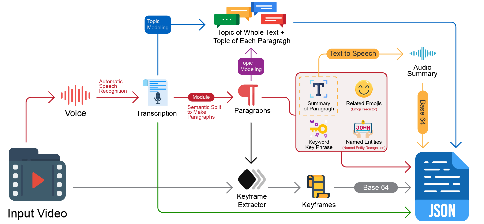

Mapping Movies: A Mind-Map Approach to Aphasia-Friendly Video
Authors
- Shayan Bali, Department of Informatics, King’s College London, London, UK. shayan.bali@kcl.ac.uk
- Alexandre Nevsky, Department of Informatics, King’s College London, London, UK. alexandre.nevsky@kcl.ac.uk
- Filip Bircanin, Department of Informatics, King’s College London, London, UK. filip.bircanin@kcl.ac.uk
- Timothy Neate, Department of Informatics, King’s College London, London, UK. timothy.neate@kcl.ac.uk
Extended Abstracts of the 2026 CHI Conference on Human Factors in Computing Systems (CHI EA ’26), April 13–17, 2026, Barcelona, Spain
Abstract
Access to audiovisual media is crucial due to its significant role in society. However, access to such content is not equitable for everyone, particularly for people with complex communication needs (CCNs), such as aphasia. While interventions have been introduced to improve the accessibility of audiovisual media, these are often poorly suited to individuals with CCNs. To address this gap, we developed an AI-driven prototype that generates interactive summarisation mind maps to support people with aphasia in better understanding the content. Initial expert review from two people with aphasia offers preliminary feedback on this concept, providing high-level insights on designing accessibility interventions which augment video with additional explanatory content.
CCS Concepts
Human-centered computing: Accessibility technologies
Human-centered computing: Empirical studies in accessibility
Human-centered computing: Accessibility systems and tools
Keywords
- accessibility
- aphasia
- video
- mind map
- visualisation
- AI
Introduction
Audiovisual media is an integral part of people’s lives, and is essential for accessing information and engaging with the wider world [29] across myriad social and civic domains [1, 18, 28]. However, despite its importance, access to audiovisual media remains unequal, with many people with disabilities, including those with complex communication needs (CCNs), facing persistent barriers [24]. Consequently, the research community, together with industry, has developed accessibility supports, such as subtitles and audio descriptions (AD) which are now commonplace. Despite significant progress, many accessibility challenges persist. In particular, accessibility of audiovisual content for individuals with CCNs, often related to language or cognitive impairments, remains limited [25]. The language disability aphasia is one such under-represented condition. People with aphasia experience difficulties with understanding, speaking, reading, and/or writing, with the nature and severity varying between individuals [4, 20]. These communication difficulties are manifested in the consumption of audiovisual media [25], yet little work has been done to explore how technology might be designed to support.
This paper investigates an exploration of how a common information presentation technique – the mind map – can support video comprehension. Mind maps, which are regularly used to aid users with comprehension difficulties, afford the clear presentation of narratives and offer flexibility to support user needs [19, 38]. We present a prototype which uses emerging AI capabilities to automatically create a mind map of any video, with a view of aiding comprehension within an aphasia-friendly interface. Our contribution is twofold:
- The development of a mind map-based system for converting audiovisual content into interactive summarization
- Initial formative feedback of VideoMind system through expert reviews with people with aphasia
Related Work
Aphasia and Audiovisual Media Barriers
Individuals with aphasia face several barriers when accessing audiovisual content, including linguistic challenges related to speech speed and complexity, limitations of subtitles, and visual overload caused by rapid or distracting visuals [24]. The vast majority of accessibility interventions are designed to support users with sensory disabilities, with wider populations significantly under-served [25] – including users with aphasia. While subtitles are widely used to support people who are d/Deaf or hard of hearing (DHH) [10], and audio description can enable access for individuals who are blind or low vision (BLV) [32], few approaches are designed for users with complex communication needs. In response to the lack of interventions designed with users with CCNs in mind, recent work has proposed accessibility interventions for people with aphasia, such as dynamic pacing and simplifying audiovisual content content [5, 22, 23].
Mind Maps and Aphasia
Mind maps allow for the organization of information into a simple visual form. In aphasia therapy, mind maps have been used to structure complex language tasks such as storytelling [38]. Moreover, mind mapping for narrative work in the speech and language therapy field has been identified as an evidence-based intervention that contributes to improving real-life communication [19]. In our prior work [5], users with aphasia built on their own personal experience as regular mind mappers to envision future technologies which support access to key topics, places and people in the audio content they were having difficulties with. For instance, one participant used intricate, hand-drawn mind maps to support her understanding of the 2024 UK Conservative party leadership race. Beyond aphasia, mind mapping has also demonstrated benefits for individuals with other CCNs, including autism spectrum disorder and cognitive-communication impairments, by supporting understanding, information retention, and greater communication autonomy [15, 39]. Inspired by this prior work, and by the design ideas seeded by co-designers in our prior aforementioned work [5], we explore dynamic mind map generation as a means to aid the comprehension of video.
The VideoMind Accessible Video Mind Mapping Tool
We present VideoMind – an automatic AI-supported mind map tool, which provides an aphasia-friendly interface to support the comprehension of key concepts in videos. A demonstration is provided as a Video Figure with this paper. The VideoMind tool generates a mind map, organized by topic and time. To enable this, the input video is divided into coherent segments and arranged chronologically. The central node represents the overall topic, while child nodes correspond to video segments, ordered by timestamp, and include sub-nodes with additional details derived from selected features.
VideoMind’s Simplification Methods
VideoMind uses a range of methods to extract and simplify content in a way that might support more aphasia-friendly presentation. Topic modelling is used to improve content understanding by enabling a structured breakdown, with a view to reduce cognitive load, enhance comprehension, recall and sense making for users with CCNs [12]. We also use keyword/key phrase extraction [26], so that we can emphasize main ideas, with similar aims. Such methods are implemented with bullet-wise summarization, which has been shown to aid comprehension for users with CCNs [3, 9]. To extract key people, places and dates, we used Named Entity Recognition – highlighting key grounding information such as these are important for supporting users with aphasia in comprehension [27].
VideoMind’s Presentation Methods, Interface and Technical Implementation
VideoMind combines multiple modalities and generated materials to aid comprehension. It uses text‑to‑speech summaries throughout, drawing on evidence that TTS supports users with aphasia [13] and has been effective in prior aphasia‑focused apps [5, 21]. Emojis are also used as visual representations of words and concepts throughout to support an additional modality; a method which has been shown to be useful for people with aphasia with comprehension challenges [17] and successfully employed in accessible media technologies for people with aphasia [5]. Similarly, to provide visual reference to the content being watched, key-frames are extracted at the specific times to link each mind map node to the relevant point in the video. To provide a textual representation, we also provide subtitles. Finally, the interface was iterated by the whole team based on prior experience of designing accessible technologies for users with aphasia, supported by aphasia-friendly guidance (e.g. [33, 34]), and the literature on aphasia and perception. This included reduced visual clutter [36], a stepped approach to revealing the interface [21] and consistent use of icons and text in tandem [33, 34].
In terms of technical implementation, VideoMind is a full-stack, responsive web-based system with both front-end and back-end components. The front end is built using TypeScript, HTML, and CSS, with React.js used to create an interactive, component-based interface. The back end is implemented in Python and generates mind map content using locally deployed, publicly available AI and NLP models. The Whisper base model [31] has been deployed locally for automatic speech recognition and subtitle generation. The Llama-3.1-8B-Instruct model [11] has been employed locally as a large language model for emoji prediction, text summarization, keyword extraction, and keyphrase extraction. A variant of Llama-3.2-1B has also been used for topic modelling. In addition, CLIP-ViT-B/32 [30], an image–text model, has been used for keyframe extraction based on segment summaries. Ultimately, uploaded videos are processed to generate a JSON-based mind map for visualization (see Figure 1).

VideoMind Interface
VideoMind and its views are shown in Figure 2. It consists of three views: Split View, Video Summary, and Interactive Mind Map. The Split view consists of three components: the Video Player (blue box), the Video Summary (yellow box), and the Interactive Mind Map (green box). The video player displays content and provides standard playback controls, along with adjustable generated subtitles. The next component is the Interactive Mind Map box. The Interactive Mind Map visualizes the video semantically and provides controls for resizing and resetting. It includes a central node representing the overall topic, with connected child nodes corresponding to individual segments of the audiovisual content. Each node is shown as a card displaying the segment’s timestamp, topic, and keywords, and includes Play and Listen buttons to jump to the segment or hear its audio summary. Each child node expands into three sub-nodes: a key frame with a brief summary and highlighted entities, a set of relevant emojis, and a list of keywords or key phrases. The mind map is fully interactive and synchronised to the video playback, enabling dynamic exploration. It also includes a collapsible Video Summary panel that shows keywords, a short summary, and the time frame for the current segment. The Video View, consists of the Video Player (blue box), the Dynamic Video Summary (yellow box), and a Live Transcription box. The Video Player and summary operate in the same way as in the Split View. The key difference is the Live Transcription box, which displays real-time subtitles along with the preceding and following sentences to provide additional context; prioritizing textual and audio information over visual elements such as the mind map. Finally, the Mind Map View displays the mind map on its own at a larger scale, providing users with more space and flexibility to interact with it more easily.
![Four images showing the prototype. (A) shows a video screen with a map on it and to the right, its mind map. The mind map has a central node with edges branching out to their nodes. The central node is "British history > Scottish kingdom > Scottish wars", with node such as "historical events" branching off. (B) is similar, but shows the possibility of switching between screens with a slider. (C) has the video with two text boxes providing summary on the right. (D) shows a zoomed in version of the mind map.](./figures/concat_2x2.png)
User Study: Recruitment and Results
Method
We recruited two people with aphasia who were experienced in co-designing technologies and giving feedback on research prototypes to a range of research groups for over 7 years. We prioritised depth of observation and critique over breadth, aiming to surface accessibility and interaction breakdowns through an early-stage, formative prototype study. Although both participants provided highly valuable critique grounded in extensive co-design experience, the small sample size means we treat the findings as indicative and plan broader evaluation in future work.
We conducted one-to-one sessions with each person in which we: introduced the technology; gave hands on time for them to explore its features; then allowed for a reflection. Mind maps were generated for three types of content: news, historical, and documentary, to ensure a diverse range of examples to reduce content bias. The mind maps were generated entirely by the system without human authoring. The participants were encouraged to freely interact with the system and engage with the prepared content using the mind map interface. At the end of the session, we administered a short questionnaire to capture feedback and improvement suggestions (see Appendix A) using it as a structured interview prompt to elicit the impressions.
Findings
Thematic analysis of participant feedback identified two themes defining VideoMind’s practical affordances and the interface conditions required for those benefits in people with aphasia.
Selective Navigation for Focused Engagement
The VideoMind operated as a meaning-first navigation layer that let participants triage content, skip fatigue-inducing segments, and return to relevant parts without relying on trial-and-error scrubbing.
Participants used VideoMind to jump directly to valued content rather than scrubbing a timeline or scanning chapters: “jump to the best part of the news, cut the crap out and just listen to what I want” (P1). Both participants appreciated a possibility to preview structure before committing attention, using labelled segments and short summaries/keywords as a quick decision aid “quickly look at the map” (P2). Chunking viewing across time was seen as important as it enabled them to treat segments as manageable units to revisit later: “Everything’s broken down so it is good. I can go back and see that part [now], then tomorrow I can watch the next part” (P1). This was especially valuable for news, where repetition and density were described as “boring” – not as a lack of interest, but as a signal of comprehension drop and overload risk. The mind map enabled content triaging (e.g. watching only new or relevant segments) rather than enduring long stretches that might become confusing or effortful.
Managing Overload through Simplified Interfaces and Controls
While the VideoMind increased control and context comprehension, participants emphasised that simultaneous presentation can negate these benefits; the interface must support on-demand access and reduce competing streams of attention.
Participants reported the split view could be “too much information” (P2), and “hard to focus” (P1), describing scattered attention when video and map were both visible “I’m looking at this, this, this, this” (P2).
Their instantaneous response was to propose design adjustments that preserve control while lowering cognitive load. In the light of imagining how this would appear on large TV screen P1 suggested on-demand overlay/toggle – “like a layer on top of the video when needed and otherwise stay hidden”. For example, both participants agree that pressing a button to briefly call up the map – akin to a “picture-in-picture” overlay would allow them to concentrate on the summary, and then disappear so they could resume watching without distraction. This preference was tied to screen size and readability. P1 having a large TV at home remarked that the side-by-side view shrank the video unnecessarily: “it’s taking up... making it [the video] go to a 32-inch [size on my 55-inch TV]. I don’t want that”. Both participants agreed that auto-focus on the active node would help to reduce manual zooming and scrolling: “As soon as you go to that, it expands” (P2).
Fast ‘lookup’ interaction was deemed important. P1 compared the ideal interaction to using “Shazam” – you trigger it and instantly get the info you need, then “it goes back to watching what you’re watching”, with minimal disruption.
Discussion
Our findings point to design implications for accessible video systems for people with aphasia. The first key implication suggests the main benefit is not simply “more summary”, but restricted control: an overview first way to decide what to watch, in what order, and in what dose.
Participants in our study did not passively consume videos from start to finish; instead, they adopted a strategic, non-linear viewing approach, using the mind map to navigate according to their interests and needs. This behaviour challenges the dominant timeline-first navigation model, where interfaces offer limited structure beyond scrubbing on a linear seek bar i.e., thumbnail previews [2], Scrubbing Wheel [37], RubySlippers for keyword navigation [7], LectureScape’s dynamic timeline[16], and Smart Jump for personalised jump-back [40], to name a few. This aligns with [5], where people with aphasia emphasised temporal navigation aids (segmentation, hierarchical summaries) to support comprehension. We extend this by showing an interactive AI-generated mind map as an operational navigation layer that lets users “skip the junk” with minimal effort, prioritise what matters, and mitigate aphasia-related audiovisual fatigue [6]. Participants used the map not only to locate relevant segments but to decide whether to watch a video at all and to partition viewing into manageable chunks, pointing to an overview-first paradigm: preview narrative structure, then selectively enter segments of interest. Designing for this behaviour suggests mainstream players could incorporate summarisation previews/overlays that restructure navigation around meaning rather than continuous playback, with particular benefit for users with cognitive or language impairments.
The second key insight of our study is the importance of interface adaptability and simplicity: the VideoMind’s value depends on adaptive disclosure and automation that keeps orientation without extra interaction cost.
While the mind map provided valuable context and control, participants made it clear that how this information is presented is critical. In fact, an overly complex or cluttered interface can negate the benefits of summarization by introducing new barriers through multi-modal cues (text, audio, visuals synchronously delivered). This insight extends prior work on aphasia-friendly design [35], which advocates for clean layouts, large print, and minimal distractions in textual materials. We found that these principles are equally crucial in interactive, multimodal interfaces. Our participants struggled when the video and mind map were shown side by side – a design that, while logical for concurrent viewing, proved cognitively taxing. By making the summary interface on-demand (e.g. through a temporary overlay or a second-screen option), designers can let users choose when to engage with detailed information and when to focus on the primary content. Current industry integrations (i.e. Amazon’s X-Ray) layers additional information on demand (actor bios, trivia) over the video – a mainstream proof-of-concept that viewers can access paratextual content when they choose. However, our approach goes further by focusing on cognitive accessibility: the mind map does not just add trivia, it reorganizes core content into a simpler visual-textual form. This is novel compared to existing media accessibility tools which typically do not integrate multimodal summaries directly with playback. By combining transcript keywords, images, and audio snippets, our system embodies the multimodality that prior studies have shown to aid memory and comprehension for aphasic individuals.
Finally, how we choose to represent structured information contained in the mind map is fundamentally determined by metadata design decisions. Prior work has shown that unreliable metadata (i.e. ill-defined or incomplete) can mislead systems and omit relevant context [14], while object-based media (OBM) research demonstrates that metadata models effectively govern what personalised renditions a user can receive [8]. In our setting, these choices shape which concepts are surfaced, how they are grouped and named, and what remains visible thereby directly affecting interpret ability and user’s agency. This makes metadata not just a technical substrate but an ethical boundary condition for AI-mediated accessibility, motivating further research on transparent, contestable, and harm-aware representations for people with complex communication needs.
Conclusion
Our work extends prior knowledge in several ways. First, we demonstrate the feasibility and value of an AI-driven interactive mind map for video – moving beyond the static and linear media solutions. The expert participants’ experiences reveal that people with aphasia can actively use such a tool to shape their media consumption, from skimming news to revisiting specific scenes in entertainment media. This interactive summarization challenges the status quo of accessibility features by showing that supporting understanding is not just about add-ons or linear explanations, but about re-structuring content into more digestible forms. Second, we identify new design opportunities: for instance, the “Shazam-like” quick info lookup suggests a direction for seamless context-aware assistance, where a viewer could speak or click to get an instant explanation of a confusing segment and then continue watching. Finally, we contribute to the broader discourse on cognitive load in media accessibility. Our study provides initial qualitative evidence that chunking information (via a mind map) can reduce overload and increase engagement for viewers with cognitive-language impairments.
Acknowledgements
We thank our participants for their time and expertise and Aphasia Reconnect for hosting the study. This work was funded in part by the EPSRC through the CA11y Project (EP/X012395/1).
Author Statement
SB created the prototype with feedback from TN, AN and FB. TN and FB ran the user study with input from SB and AN. All authors contributed to writing the paper.
User Questionnaire: Mind Map Summary Tool
This questionnaire was designed to gather qualitative and quantitative feedback on the usability, accessibility, and perceived usefulness of the proposed mind map-based summarisation tool. The questions focus on participants’ overall experience, ease of navigation, cognitive load, and the extent to which the mind map supported comprehension compared to traditional audio-visual content. Open-ended questions were included to allow participants to elaborate on their experiences and suggest potential improvements. The questionnaire was intentionally kept short and simple to ensure accessibility for users with CCNs, including individuals with language or cognitive impairments.
-
Overall experience
How did you find using the mind map summary tool?- □ Very easy
- □ Easy
- □ Okay
- □ Difficult
- □ Very difficult
Details:
-
Understanding the content
Did the mind map help you understand the video/audio better than usual?- □ Much better
- □ A bit better
- □ About the same
- □ Worse
- □ Not sure
Details:
-
Cognitive load / overwhelm
Did any part of the mind map feel overwhelming or too much at once?- □ No, it felt manageable
- □ A little overwhelming
- □ Very overwhelming
If yes, what felt too much?
-
Navigation & control
How easy was it to move around and use the mind map (zooming, clicking, following links)?- □ Very easy
- □ Easy
- □ Okay
- □ Hard
- □ Very hard
-
Helpfulness of features
Which features helped you the most?
-
Comparison to normal viewing
If you had to watch or listen again, would you prefer this mind map tool or the original video/audio?- □ Definitely the mind map
- □ Probably the mind map
- □ No preference
- □ Probably original
- □ Definitely original
Details:
-
Improvements
What one change would make this tool better for you?
References
- Muzamil Hussain Al Hussaini and Juana Maria Arcelus-Ulibarrena. 2023. Exploring the Influence of Audiovisual Tools on Youth and their Social Adaptation in Elementary Education. International Journal of Learning Reformation in Elementary Education 2, 02 (2023), 95–103.
- Abir Al-Hajri, Gregor Miller, Matthew Fong, and Sidney S. Fels. 2014. Visualization of personal history for video navigation. In Proceedings of the SIGCHI Conference on Human Factors in Computing Systems (CHI ’14). Association for Computing Machinery, New York, NY, USA, 1187–1196. https://doi.org/10.1145/2556288.2557106
- Amy E Barth, Sharon Vaughn, Philip Capin, Eunsoo Cho, Stephanie Stillman-Spisak, Leticia Martinez, and Heather Kincaid. 2016. Effects of a text-processing comprehension intervention on struggling middle school readers. Topics in Language Disorders 36, 4 (2016), 368–389.
- Karianne Berg, Jytte Isaksen, Sarah J. Wallace, Madeline Cruice, Nina Simmons-Mackie, and Linda Worrall. 2020. Establishing consensus on a definition of aphasia: an e-Delphi study of international aphasia researchers. Aphasiology 36, 4 (Dec. 2020), 385–400. https://doi.org/10.1080/02687038.2020.1852003
- Filip Bircanin, Alexandre Nevsky, Himaya Perera, Vaasvi Agarwal, Eunyeol Song, Madeline Cruice, and Timothy Neate. 2025. Sounds Accessible: Envisioning Accessible Audio-Media Futures with People with Aphasia. In Proceedings of the 2025 CHI Conference on Human Factors in Computing Systems (CHI ’25). Association for Computing Machinery, New York, NY, USA, Article 277, 22 pages. https://doi.org/10.1145/3706598.3714000
- Bénédicte Bullier, Hélène Cassoudesalle, Marie Villain, Mélanie Cogné, Clémence Mollo, Isabelle De Gabory, Patrick Dehail, Pierre-Alain Joseph, Igor Sibon, and Bertrand Glize. 2020. New factors that affect quality of life in patients with aphasia. Annals of physical and rehabilitation medicine 63, 1 (2020), 33–37.
- Minsuk Chang, Mina Huh, and Juho Kim. 2021. RubySlippers: Supporting Content-based Voice Navigation for How-to Videos. In Proceedings of the 2021 CHI Conference on Human Factors in Computing Systems (CHI ’21). Association for Computing Machinery, New York, NY, USA, Article 97, 14 pages. https://doi.org/10.1145/3411764.3445131
- Craig Cieciura, Maxine Glancy, and Philip J.B. Jackson. 2023. Producing Personalised Object-Based Audio-Visual Experiences: an Ethnographic Study. In Proceedings of the 2023 ACM International Conference on Interactive Media Experiences (IMX ’23). Association for Computing Machinery, New York, NY, USA, 71–82. https://doi.org/10.1145/3573381.3596156
- Yasmeen Faroqi-Shah and Megan Gehman. 2021. The role of processing speed and cognitive control on word retrieval in aging and aphasia. Journal of Speech, Language, and Hearing Research 64, 3 (2021), 949–964.
- Morton Ann Gernsbacher. 2015. Video captions benefit everyone. Policy insights from the behavioral and brain sciences 2, 1 (2015), 195–202.
- Andrea Grattafiori, Abhimanyu Dubey, Abhinav Jauhri, Abhishek Pandey, Aman Kadian, and others. 2024. The Llama 3 Herd of Models. arXiv preprint arXiv:2407.21783 (2024).
- Chris Gropp, Alexander Herzog, Ilya Safro, Paul W Wilson, and Amy W Apon. 2016. Scalable dynamic topic modeling with clustered latent dirichlet allocation (clda).
- Karen Hux, Sarah E Wallace, Jessica A Brown, and Kelly Knollman-Porter. 2021. Perceptions of people with aphasia about supporting reading with text-to-speech technology: A convergent mixed methods study. Journal of Communication Disorders 91 (2021), 106098.
- Rosie Jones, Hamed Zamani, Markus Schedl, Ching-Wei Chen, Sravana Reddy, Ann Clifton, Jussi Karlgren, Helia Hashemi, Aasish Pappu, Zahra Nazari, Longqi Yang, Oguz Semerci, Hugues Bouchard, and Ben Carterette. 2021. Current Challenges and Future Directions in Podcast Information Access. In Proceedings of the 44th International ACM SIGIR Conference on Research and Development in Information Retrieval (SIGIR ’21). Association for Computing Machinery, New York, NY, USA, 1554–1565. https://doi.org/10.1145/3404835.3462805
- Phillip Kellogg and Allison Nogi. 2018. Mind Mapping: Using Visual Thinking to Improve Patient Care and Quality of Life. The Journal of Humanities in Rehabilitation 1, 1 (April 2018). https://doi.org/10.18737/0607212347
- Juho Kim, Philip J. Guo, Carrie J. Cai, Shang-Wen (Daniel) Li, Krzysztof Z. Gajos, and Robert C. Miller. 2014. Data-driven interaction techniques for improving navigation of educational videos. In Proceedings of the 27th Annual ACM Symposium on User Interface Software and Technology (UIST ’14). Association for Computing Machinery, New York, NY, USA, 563–572. https://doi.org/10.1145/2642918.2647389
- Tingyi S Lin and Yue Luo. 2024. Visual-textual integration: Emoji as a supplement in health information design. International Journal of Design 18, 2 (2024), 37–58.
- Hans Martens and Renee Hobbs. 2015. How media literacy supports civic engagement in a digital age. Atlantic Journal of Communication 23, 2 (2015), 120–137.
- Katie Monnelly, Jane Marshall, and Madeline Cruice. 2022. Intensive Comprehensive Aphasia Programmes: a systematic scoping review and analysis using the TIDieR checklist for reporting interventions. Disability and Rehabilitation 44, 21 (2022), 6471–6496.
- Reg Morris, Alicia Eccles, Brooke Ryan, and Ian I. Kneebone. 2017. Prevalence of anxiety in people with aphasia after stroke. Aphasiology 31, 12 (March 2017), 1410–1415. https://doi.org/10.1080/02687038.2017.1304633
- Timothy Neate, Abi Roper, Stephanie Wilson, and Jane Marshall. 2019. Empowering Expression for Users with Aphasia through Constrained Creativity. In Proceedings of the 2019 CHI Conference on Human Factors in Computing Systems (CHI ’19). Association for Computing Machinery, New York, NY, USA, 1–12. https://doi.org/10.1145/3290605.3300615
- Alexandre Nevsky, Filip Bircanin, Madeline Cruice, Elena Simperl, and Timothy Neate. 2025. To Each Their Own: Exploring Highly Personalised Audiovisual Media Accessibility Interventions with People with Aphasia. In Proceedings of the 2025 ACM Designing Interactive Systems Conference (DIS ’25). Association for Computing Machinery, New York, NY, USA, 1–18. https://doi.org/10.1145/3715336.3735771
- Alexandre Nevsky, Filip Bircanin, Madeline Cruice, Stephanie Wilson, Elena Simperl, and Timothy Neate. 2024. “I Wish You Could Make the Camera Stand Still“: Envisioning Media Accessibility Interventions with People with Aphasia. In ACM SIGACCESS Conference on Computers and Accessibility (ASSETS ’24). Association for Computing Machinery, New York, NY, USA, 1–17. https://doi.org/10.1145/3663548.3675598
- Alexandre Nevsky, Timothy Neate, Elena Simperl, and Madeline Cruice. 2024. Lights, Camera, Access: A Closeup on Audiovisual Media Accessibility and Aphasia. In Proceedings of the 2024 CHI Conference on Human Factors in Computing Systems (CHI ’24). Association for Computing Machinery, New York, NY, USA, 1–17. https://doi.org/10.1145/3613904.3641893
- Alexandre Nevsky, Timothy Neate, Radu-Daniel Vatavu, and Elena Simperl. 2023. Accessibility Research in Digital Audiovisual Media: What Has Been Achieved and What Should Be Done Next? In ACM International Conference on Interactive Media Experiences (IMX ’23). Association for Computing Machinery, New York, NY, USA, 1–21. https://doi.org/10.1145/3573381.3596159
- Eirini Papagiannopoulou and Grigorios Tsoumakas. 2020. A review of keyphrase extraction. Wiley Interdisciplinary Reviews: Data Mining and Knowledge Discovery 10, 2 (2020), e1339.
- Gill Pearl and Madeline Cruice. 2017. Facilitating the involvement of people with aphasia in stroke research by developing communicatively accessible research resources. Topics in Language Disorders 37, 1 (2017), 67–84.
- Dung Thi Thuy Pham. 2021. The effects of audiovisual media on students’ listening skills. International Journal of TESOL & Education 1, 1 (2021), 13–21.
- Mark Priestley, Martha Stickings, Ema Loja, Stefanos Grammenos, Anna Lawson, Lisa Waddington, and Bjarney Fridriksdottir. 2016. The political participation of disabled people in Europe: Rights, accessibility and activism. Electoral Studies 42 (2016), 1–9.
- Alec Radford, Jong Wook Kim, Chris Hallacy, Aditya Ramesh, Gabriel Goh, Sandhini Agarwal, Girish Sastry, Amanda Askell, Pamela Mishkin, Jack Clark, Gretchen Krueger, and Ilya Sutskever. 2021. Learning Transferable Visual Models From Natural Language Supervision. In International Conference on Machine Learning (ICML).
- Alec Radford, Jong Wook Kim, Tao Xu, Greg Brockman, Christine McLeavey, and Ilya Sutskever. 2022. Robust Speech Recognition via Large-Scale Weak Supervision. arXiv. https://doi.org/10.48550/ARXIV.2212.04356
- Sonali Rai, Joan Greening, and Leen Petré. 2010. A comparative study of audio description guidelines prevalent in different countries.
- Abi Roper, Ian Davey, Stephanie Wilson, Timothy Neate, Jane Marshall, and Brian Grellmann. 2018. Usability Testing - An Aphasia Perspective. In Proceedings of the 20th International ACM SIGACCESS Conference on Computers and Accessibility (ASSETS ’18). Association for Computing Machinery, New York, NY, USA, 102–106. https://doi.org/10.1145/3234695.3241481
- Abi Roper, Timothy Neate, Jane Marshall, and Stephanie Wilson. 2018. Designing for users with aphasia: “Dos and don’ts”. Available at: https://bpb-eu-w2.wpmucdn.com/blogs.city.ac.uk/dist/5/1740/files/2018/05/aphasia-tpqt60.pdf.
- T. A. Rose, L.E. Worrall, L.M. Hickson, Hoffmann, and T.C. 2011. Aphasia friendly written health information: Content and design characteristics. International Journal of Speech-Language Pathology 13, 4 (2011), 335–347. https://doi.org/10.3109/17549507.2011.560396
- Tanya A Rose, Linda E Worrall, Louise M Hickson, and Tammy C Hoffmann. 2011. Aphasia friendly written health information: Content and design characteristics. International journal of speech-language pathology 13, 4 (2011), 335–347.
- Klaus Schoeffmann and Lukas Burgstaller. 2015. Scrubbing Wheel: An Interaction Concept to Improve Video Content Navigation on Devices with Touchscreens. In 2015 IEEE International Symposium on Multimedia (ISM). IEEE, New York, NY, USA, 351–356. https://doi.org/10.1109/ism.2015.20
- Anne Whitworth. 2010. Using Narrative as a Bridge: Linking Language Processing Models with Real-Life Communication. Seminars in Speech and Language 31, 01 (Feb. 2010), 64–75. https://doi.org/10.1055/s-0029-1244954
- Andreas Winardi. 2022. The utilization of mind maps to assist a student with autism spectrum disorder. PUPIL: International Journal of Teaching, Education and Learning 6, 1 (March 2022), 142–158. https://doi.org/10.20319/pijtel.2022.61.142158
- Han Zhang, Maosong Sun, Xiaochen Wang, Zhengyang Song, Jie Tang, and Jimeng Sun. 2017. Smart Jump: Automated Navigation Suggestion for Videos in MOOCs. In Proceedings of the 26th International Conference on World Wide Web Companion (WWW ’17 Companion). International World Wide Web Conferences Steering Committee, Republic and Canton of Geneva, CHE, 331–339. https://doi.org/10.1145/3041021.3054166